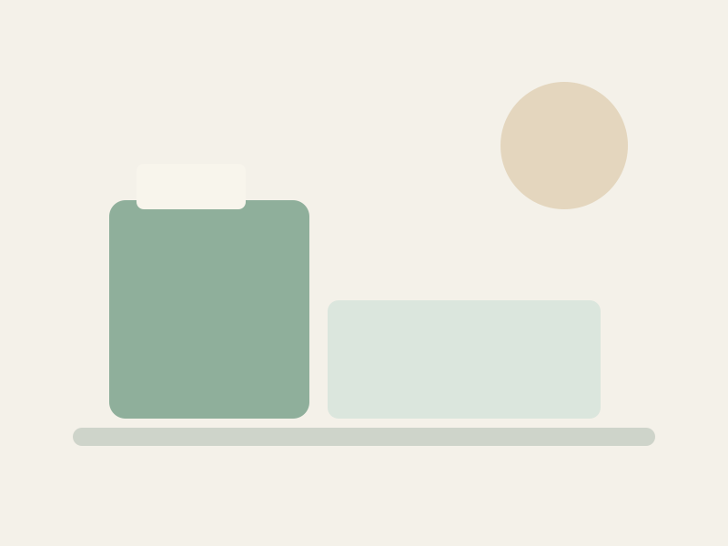

Our Mission
To provide personalized residential care that protects each resident's dignity, independence and sense of belonging — in a home that feels like one.
A small residential care home in Seattle, built around the belief that growing older should not mean giving up the feeling of being at home.

Our Story
Willowbrook began with a simple observation: in large facilities, the things that make someone feel like themselves — a favourite chair, a familiar routine, a caregiver who knows their name — are the first things to get lost. Schedules crowd out conversations. Rotas replace relationships. The building is efficient; the experience is not.
An Adult Family Home keeps those things intact. By caring for a small number of residents in a real house, we can offer something a corridor of rooms cannot: continuity, genuine familiarity, and the freedom to shape a day around a person rather than a schedule.
We started Willowbrook because we wanted a home where our own family members would want to live. That's still the standard we hold ourselves to every day.
Founding history, ownership details and years of experience are placeholders. Verified information will replace this text before launch.
What Guides Us
Three statements we return to whenever we make a decision about the home.
To provide personalized residential care that protects each resident's dignity, independence and sense of belonging — in a home that feels like one.
A community where older adults in Seattle can age in a home-like setting, surrounded by people who genuinely know them and their families.
Care is a relationship, not a task list. We listen first, plan together, and adjust as needs and preferences change — without losing sight of the person.
Core Values
Privacy in personal care. Choice in what to wear, when to eat, and who to spend time with. The right to say no. Dignity isn't a policy — it's the way you treat someone when nobody is watching.
We help residents do what they can, rather than doing it for them. The instinct to stay active, make choices and stay engaged is what keeps people feeling alive — and we protect it.
A house isn't a home because of square footage. It's the familiar mug, the chair by the window, the smell of something cooking, the voice that says good morning. We protect the small things.
We can't care for someone well without understanding who they are — and no one knows that better than their family. We treat relatives as collaborators, not visitors.
Residents are protected, not watched. We build safety into the physical environment and into our routines, so that freedom and safety reinforce each other rather than compete.
Care needs change. So does the person receiving it. We treat every care plan as a living document and every resident as someone still becoming who they are.
Family-Centered
We agree expectations at move-in: how often we'll be in touch, who to call, and how we handle changes. No guessing.
Care plan updates happen with families, not above them. Decisions are discussed before they're made.
Family visits are welcome. We'll agree the practical details — hours, meals, parking — directly with you.
If we can't meet a need, we say so. If something has changed, we say that too. Trust comes from honesty, not optimism.
Siblings, grandchildren, close friends — anyone important to the resident is important to us.
Every resident has a written care plan, kept current and available to families on request.
Every resident at Willowbrook can expect to be treated as an individual with a history, preferences and the right to make choices about their own life. That commitment shapes how we speak, how we plan care, and how we handle the difficult moments.
Quality & Safety
An Adult Family Home in Washington is licensed and monitored by the state Department of Social and Health Services. Beyond the minimum, we hold ourselves to the following standards:
Caregivers are trained on each resident's individual care plan and refreshed on safe practices, medication support and dignity-focused care.
Every resident has a written care plan, reviewed regularly and updated when needs change.
We welcome questions about our license, our processes and our records. Ask us during a tour.
Staff are expected to raise concerns early — about residents, about processes, about anything that doesn't feel right.
Specific licensing, inspection results and certifications must be verified against state records and the home owner's documentation before publication.
The best way to understand a small care home is to visit one.